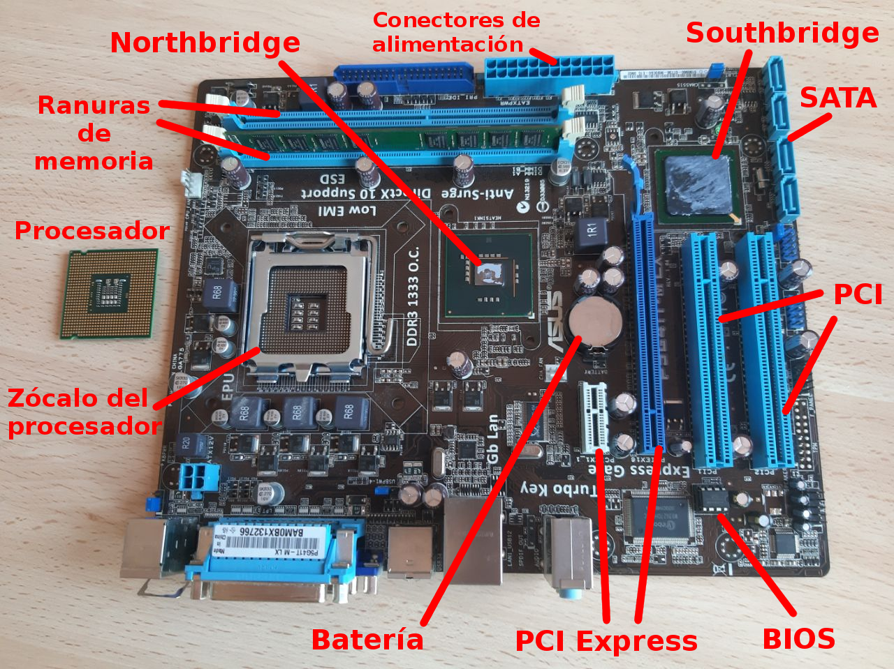

Los dispositivos que conforman el hardware del ordenador se pueden clasificar en dos grandes bloques:
Unidad Central de Proceso (CPU): Se trata de la carcasa del ordenador junto con los dispositivos informáticos y chips electrónicos que hay en su interior (procesador, memoria RAM, disco duro, etc.)
En tecnología, la escala se usa para mostrar objetos o diseños en un tamaño diferente al original, ya sea más pequeño o más grande.
Esto es útil para diseñadores e ingenieros, ya que les permite trabajar con modelos y planos que no necesariamente son del mismo tamaño que el objeto real.  
2. EN VÍDEO
3. UNIDAD DE PROCESO
La CPU está compuesta por los dispositivos y chips más importantes del ordenador. A continuación describiremos los siete principales elementos que componen la unidad centra de proceso.
1. LA PLACA BASE
La placa base es el soporte donde se conectan el resto de elementos de la CPU (microprocesador, memoria RAM, disco duro, CD y DVD, etc.)

2. MICROPROCESADOR
El microprocesador es el cerebro del ordenador. Se trata de un chip formado por millones de transistores y otros componentes electrónicos que le permiten manejar gran cantidad de datos y realizar cálculos y operaciones con ellos a gran velocidad.
El chip suele ubicarse bajo el ventilador, ya que su elevada potencia de cálculo hace que se caliente a altas temperaturas.
Cuando el microprocesador trabaja con programas o datos necesita acceder a ellos de forma rápida y eficiente. La memoria RAM es una memoria de alta velocidad donde se almacenan temporalmente los programas o datos con los que el ordenador va a trabajar para que el microprocesador pueda acceder a dicha información de forma rápida.
La memoria RAM se modifica constantemente al abrir archivos, cargar programas, cerrar programas y ficheros, etc. Al apagar el ordenador, el contenido de la RAM se borra, por lo que es una memoria no permanente.
Además de los discos duros, se suele utilizar otros dispositivos de memoria de gran capacidad para almacenar información de forma externa. Gracias a ellos los fabricantes pueden distribuir sus programas, los usuarios pueden guardar copias de seguridad externas de sus archivos, fotos o videos, etc.
Los dispositivos de almacenamiento más utilizados en la actualidad son el CD, DVD y memorias USB y microSD.
Las tarjetas de expansión son circuitos que se instalan en la placa base del ordenador para ampliar su funcionalidad. Algunas de las tarjetas de expansión más comunes en un ordenador son:
Tarjeta gráfica.
Tarjeta de sonido.
Lectura facilitada
A la hora de trabajar con escalas podemos encontrar tres tipos de escalas diferentes:
1. Escala de reducción:
La escala de reducción se utiliza cuando deseamos representar un objeto o un diseño en un tamaño más pequeño que su tamaño real.
Ejemplo: Si estamos diseñando un plano de una habitación y usamos una escala de 1:50, esto significa que cada centímetro en el plano representa 50 centímetros en la realidad. En otras palabras, estamos reduciendo el tamaño real del espacio en 50 veces para que quepa en nuestro dibujo.
Uso común: La escala de reducción se emplea para representar edificios, planos arquitectónicos, maquetas, mapas, entre otros
2. Escala de ampliación:
La escala de ampliación se utiliza cuando deseamos representar un objeto o un diseño en un tamaño más grande que su tamaño real.
Esto significa que cada centímetro en nuestro dibujo representa 2 centímetros en el circuito real.
Estamos ampliando el tamaño del circuito en el dibujo para ver los detalles con más claridad.
Uso común: La escala de ampliación es útil para representar componentes electrónicos, detalles minuciosos en diseños mecánicos, circuitos impresos, etc.
Ejemplo: En algunos casos, es esencial representar objetos o detalles exactamente como son en la realidad. Por ejemplo, al diseñar una llave inglesa o una pieza de repuesto que debe encajar perfectamente con el objeto real, se utiliza una escala natural (1:1) para que no haya ninguna distorsión de tamaño.
Uso común: La escala natural se emplea en situaciones en las que la precisión en las dimensiones es crítica, como en la fabricación de piezas y componentes.
 Los dispositivos que conforman el hardware del ordenador se pueden clasificar en dos grandes bloques:
Los dispositivos que conforman el hardware del ordenador se pueden clasificar en dos grandes bloques: